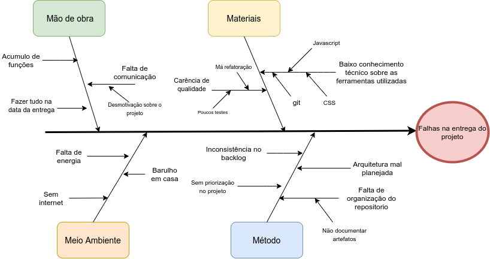

Causa e efeito (Diagrama de Ishikawa)
1. Introdução
Use diagrama de causa e efeito para organizar as informações de brainstorming sobre as possíveis causas do problema. O desenvolvimento de um diagrama de causa e efeito com a sua equipe pode ajudá-lo a comparar a importância relativa das diferentes causas. Um diagrama de causa e efeito também é chamado um diagrama de C&E, um diagrama espinha de peixe, ou um diagrama de Ishikawa.
2. Metodologia
Sendo assim, sabemos que uma boa maneira de trabalharmos com esse método seria a adoção também do método 6M, onde é muito utilizado para a produção do diagrama. Ele envolve Mão-de-obra, Máquinas, Materiais, Método, Meio-ambiente e Medição. Em visão de aplicabilidade ao projeto, iremos analisar como efeito as falhas na entrega do projeto. Para a efetividade do método, iremos então analisar 4 objetos do método, sendo eles a Mão de obra, Materiais, Meio ambiente e o Método. Escolhemos esses objetos pois são os fatores mais críticos do projeto, flexibilizando então a criação do diagrama de Ishikawa.
Tendo então a problematização das categorias utilizados das possíveis causas temos:
- Mão de obra: Problemas que envolvem os motivos individuais da equipe.
- Materiais: Utilização das tecnologias e técnicas na produção e implementação da solução computacional.
- Meio Ambiente: Causas que são difíceis de serem resolvidas pelo time por suas particularidades.
- Método: Falha na implementação do conteúdo metodológico que envolve a mais importante produção do grupo.
3. Resultado

É possível então identificar as causas e interromper ou evitar que os problemas sejam concretizados. Em relação a solução dessas causas temos:
- Mão de obra: Não deixar que indivíduos acumulem as funções do projeto, dividindo igualitariamente. Ser mais proativo em relação a comunicação do trabalho. E o integrante necessita organizar melhor a agenda pessoal para fazer seus trabalhos em parte, não tudo na hora, para evitar um trabalho mal feito.
- Materiais: É um problema mais técnico que pode ser remediado pela instrução sobre as tecnologias usadas, onde pode ser feito sprints para estudar as ferramentas, ou cobrir em cada membro do grupo os pontos fracos e fortes. Ter um cuidado maior no zelo da qualidade do software, que envolve a má implementação dos requisitos, verificação e validação dos mesmos.
- Meio Ambiente: Por ter pontos que são difíceis de serem remediados, juntamente com a causa da pandemia de COVID-19, podemos tentar organizar o grupo melhor de uma forma assíncrona para que esses problemas não venham ao acaso.
- Método: Uma das soluções mais empregadas para esse problema é a questão da organização do time. Onde seja muito bem delegada as funções dos integrantes, que tenham reuniões para que todos tenham a verificação do assunto tratado na semana. Boas práticas e politicas feitas no repositório do projeto.
4. Referências
Diagrama de causa e efeito. Disponível em: https://support.minitab.com/pt-br/minitab/18/help-and-how-to/quality-and-process-improvement/quality-tools/how-to/cause-and-effect-diagram/before-you-start/overview/ . Acessado em: Agosto/2021
Diagrama de Ishikawa (Ferramenta da Qualidade): Teoria + Exemplo Prático. Disponível em: https://www.youtube.com/watch?v=U-0qzmFqH-0&ab_channel=AprendendoGest%C3%A3o . Acessado em: Agosto/2021
5. Versionamento
| Data | Versão | Descrição | Autor(es) |
|---|---|---|---|
| 02/08/2021 | 1.0 | Criação do diagrama | Bruno Nunes |
| 02/08/2021 | 1.1 | Correção dos erros de gramática | Bruno Nunes |
| 04/08/2021 | 1.2 | Padronização do documento | Bruno Nunes e Marcos Rodrigues |